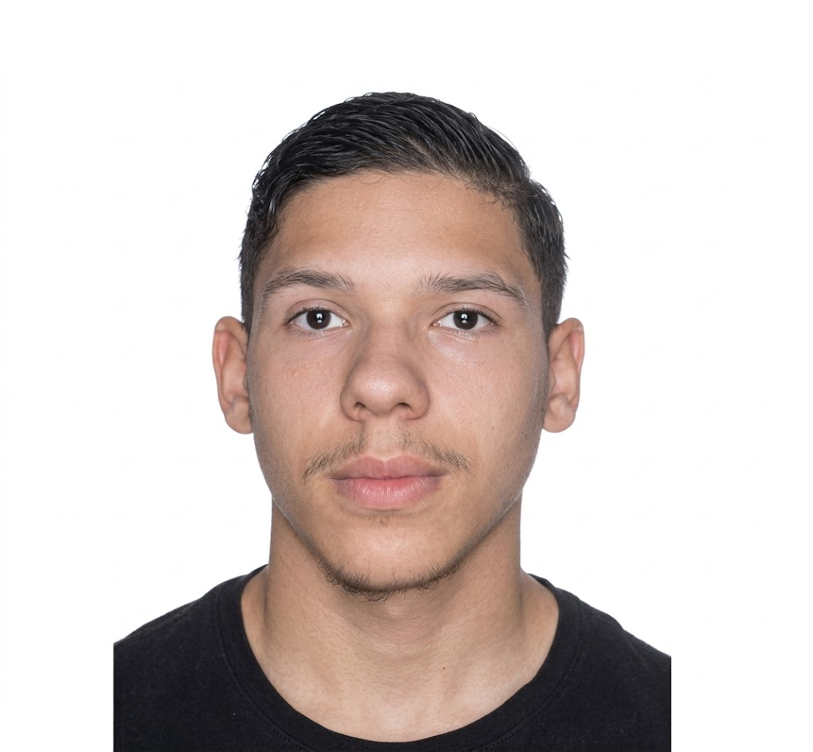

Patrick Gonçalves Pinheiro
Desenvolvedor Front-End
Sobre mim
Sou estudante de Análise e Desenvolvimento de Sistemas na Faculdade Flamingo e moro em São Paulo. Aprendi programação passo a passo, começando pelo design de interfaces e avançando até linguagens de programação mais robustas.
Estou em busca da minha primeira oportunidade profissional na área de tecnologia, como Desenvolvedor Web Júnior ou Estagiário. Esta página é o meu cartão de visitas digital e reúne o que construí e aprendi até aqui.
Tecnologias que já usei
Esta é a ordem em que aprendi cada uma ao longo do curso.
-
Design de interfaces
Comecei pensando a tela antes de programar: protótipos, organização visual e fluxo de uso.
- Figma
-
Fundamentos da web e lógica de programação
Estrutura e semântica com HTML, estilo e layout responsivo com CSS, e interatividade e lógica com JavaScript.
- HTML
- CSS
- JavaScript
-
JavaScript fora do navegador
Uso do JavaScript no servidor, base para entender como o front-end conversa com o back-end.
- Node.js
-
Interfaces modernas
Criação de interfaces com componentes reutilizáveis em React, junto com o Bootstrap para acelerar o layout.
- React
- Bootstrap
-
Programação orientada a objetos
Estudo de uma linguagem tipada e estruturada, reforçando lógica e organização de código.
- Java
Ferramentas e conceitos
Além das linguagens, estas ferramentas fazem parte do meu dia a dia de desenvolvimento.
- Git Controle de versão: registra o histórico do código e permite voltar atrás ou testar mudanças com segurança.
- GitHub Hospedagem dos repositórios, vitrine do meu código e publicação de sites com o GitHub Pages.
-
API
Integração entre sistemas: como o front-end pede e recebe dados de um serviço, por exemplo com o
fetchdo JavaScript.
Principais projetos
Projetos publicados online, que você pode abrir e testar agora.
-
TaskFlow
Landing page de um aplicativo fictício de gerenciamento de tarefas, com menu de navegação, destaque principal e cards de recursos. Projeto de revisão de Bootstrap.
- HTML
- CSS
- Bootstrap 5
-
TechStore: Checkout
Tela de finalização de compra de um e-commerce fictício: dados de cobrança com mensagens de validação, informações de pagamento, cupom de desconto e resumo do pedido.
- HTML
- CSS
- Bootstrap 5
-
Word Termo Master
Jogo de palavras inspirado no Termo, com os modos Solo, Dueto e Quarteto, estatísticas de partidas (vitórias, sequência e recorde) e opções de acessibilidade, como alto contraste e cores para daltonismo.
- HTML
- CSS
- JavaScript